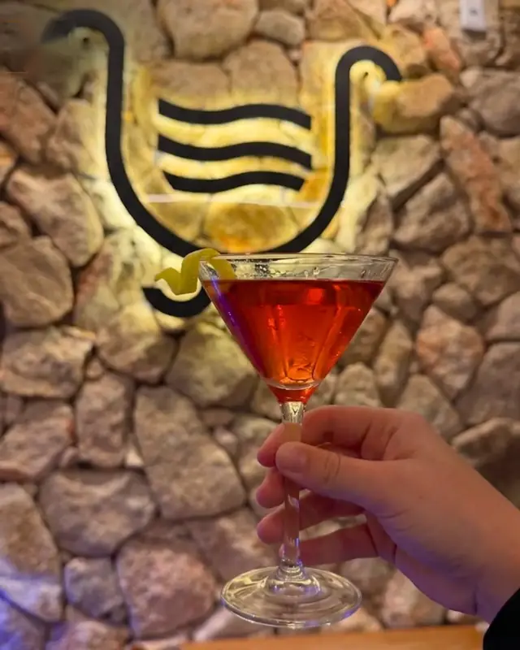
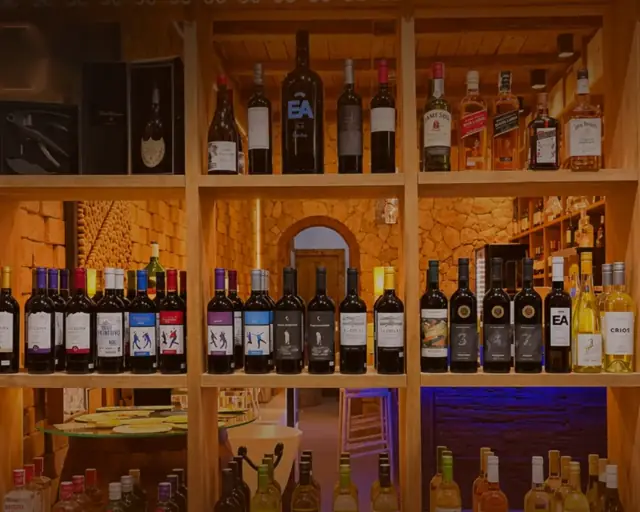
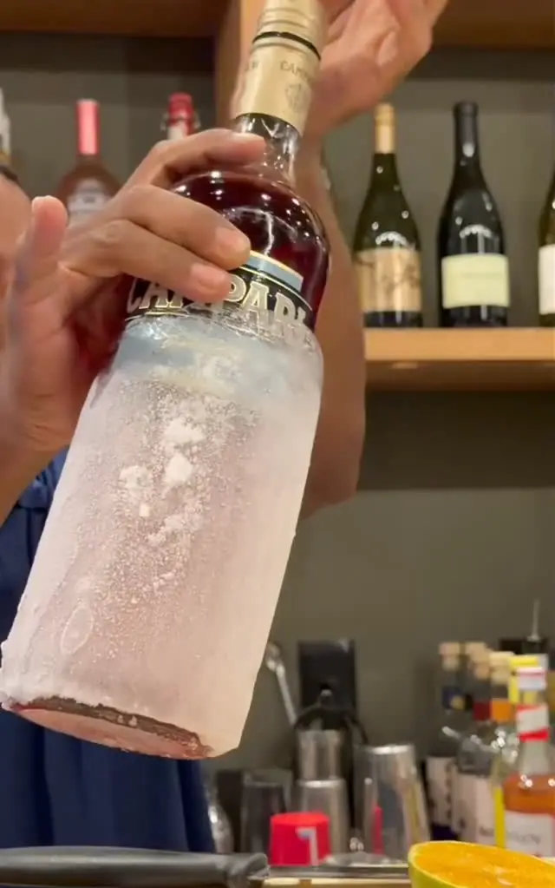
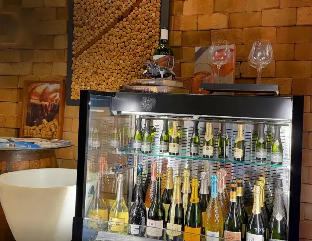
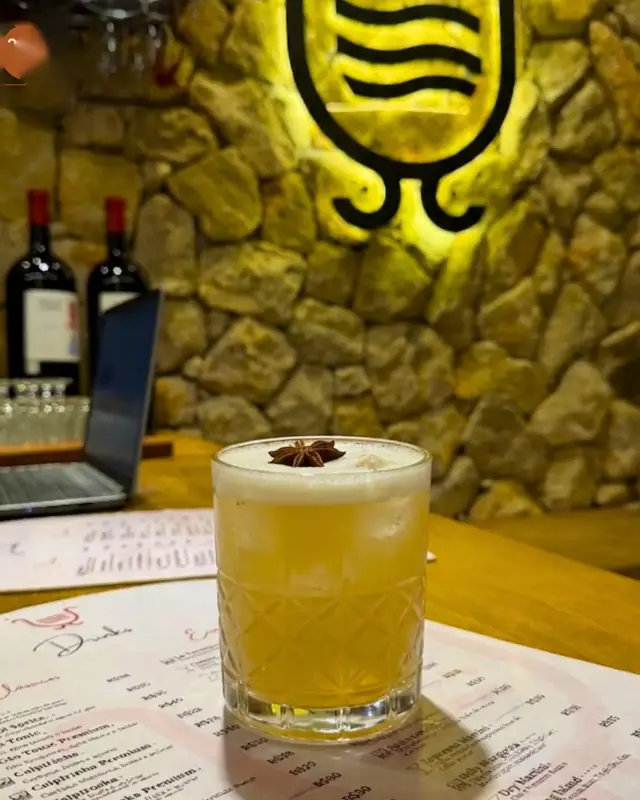
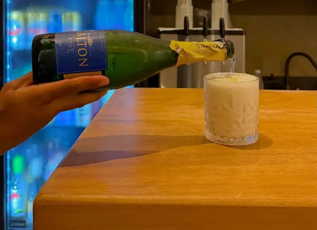
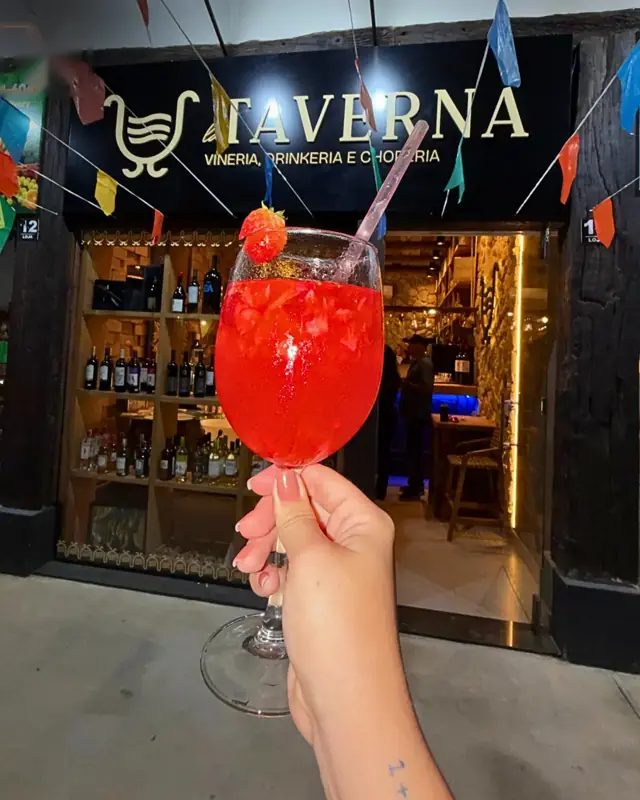
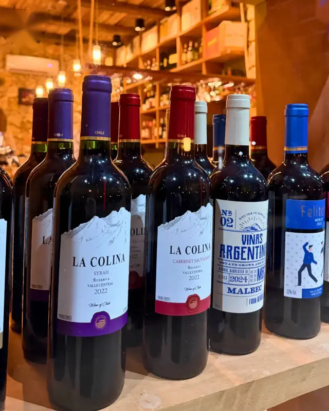
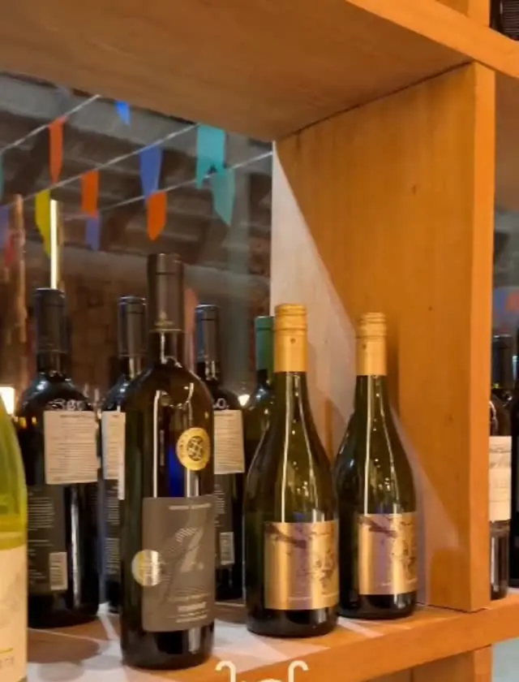

La TAVERNA Vineria, Drinkeria e Choperia
O brinde perfeito a momentos inesquecíveis.
Quinta a sábado, das 19h às 23h
Qual é a sua noite?
Escolha o clima e a taça se enche com o brinde certo. Tudo da carta de verdade, com preço.
Toque em um clima para servir
Madeira, pedra
e luz baixa
Uma parede inteira de garrafas, a adega climatizada à vista e o emblema aceso na pedra. É a última porta da varanda e a que apaga a luz mais tarde.







A carta
Drinks, shots, doses, cervejas e chope. Preços da carta atual.
Caipiroskas: confira os sabores do dia no balcão. Baixar a carta em PDF
Vineria
de verdade
Tintos, brancos, rosés e espumantes, na garrafa ou na taça. Toque numa garrafa da estante e veja como cada estilo chega à mesa.
Toque numa garrafa para servir
Escolha uma garrafa
Cada estilo tem seu corpo, sua temperatura e sua hora certa na noite.
- Corpo
- Servir a
- –
- Na casa
- –


De tempos em tempos a casa recebe degustações com sommelier na porta da loja, na própria varanda do shopping. As datas saem primeiro no Instagram.
“Quando a Taverna enche é assim: gente de boa, música certa, luz aconchegante e taças circulando pela casa.”
Te encontro
lá
- Onde
- Loja 13 · Shopping Guaratiba
Av. Itália, Praia de Guaratiba, Prado-BA - Quando
- Quinta, sexta e sábado
das 19h às 23h - Reservas
- Pelo direct do Instagram
e conhecer as outras 25 lojas do Shopping Guaratiba